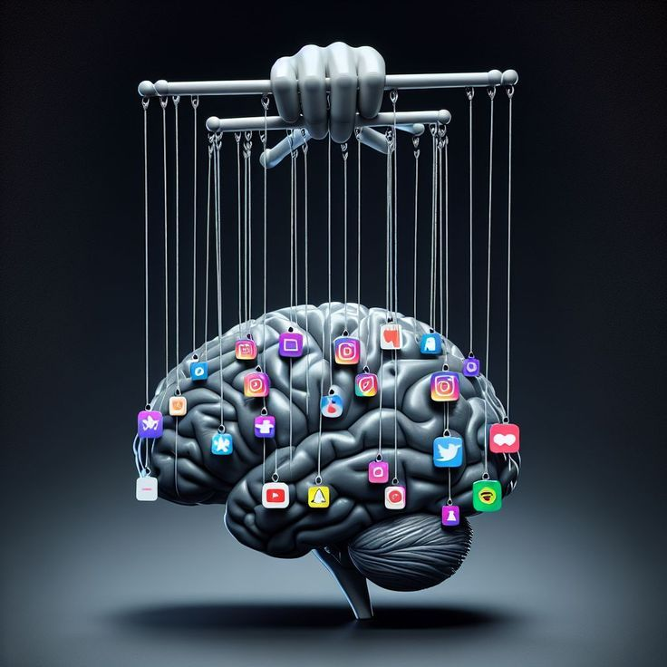
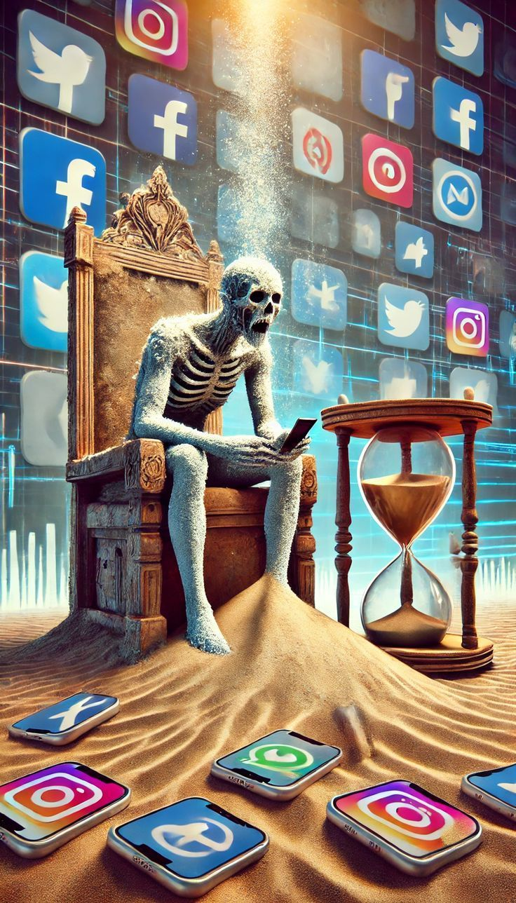
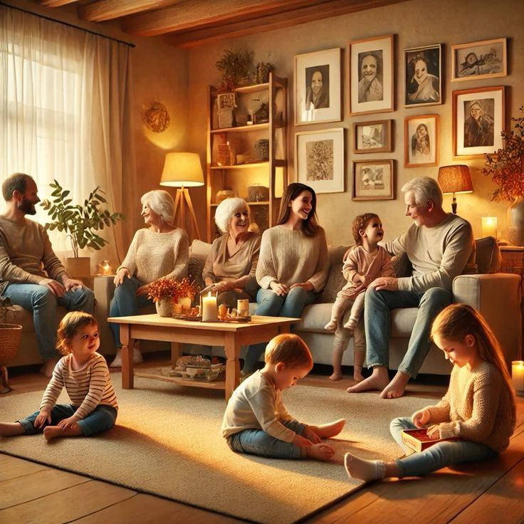
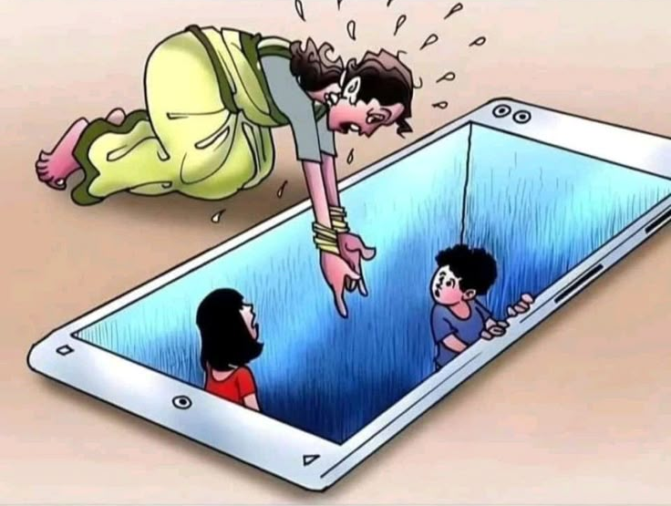
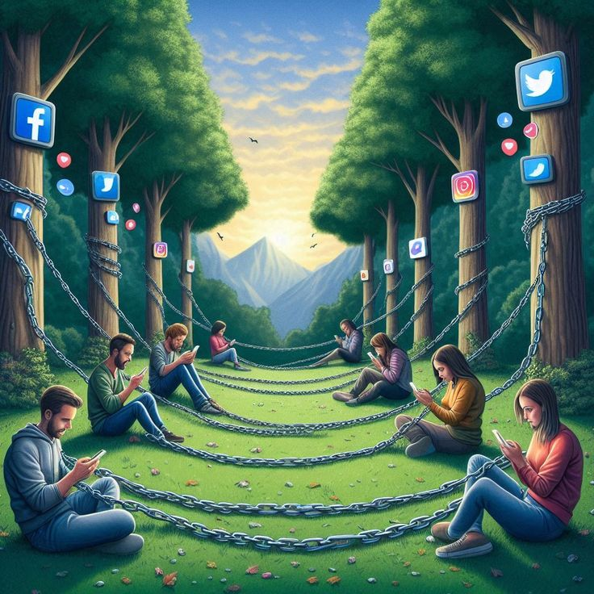
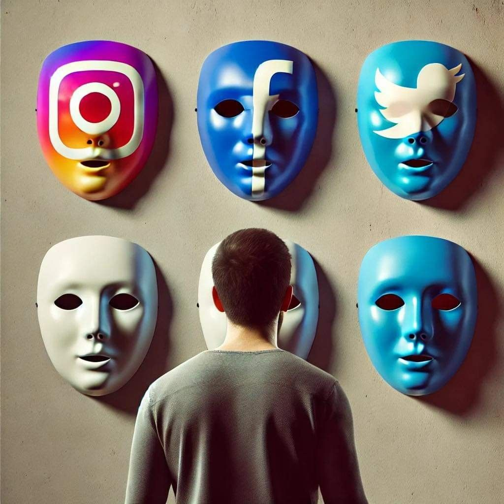
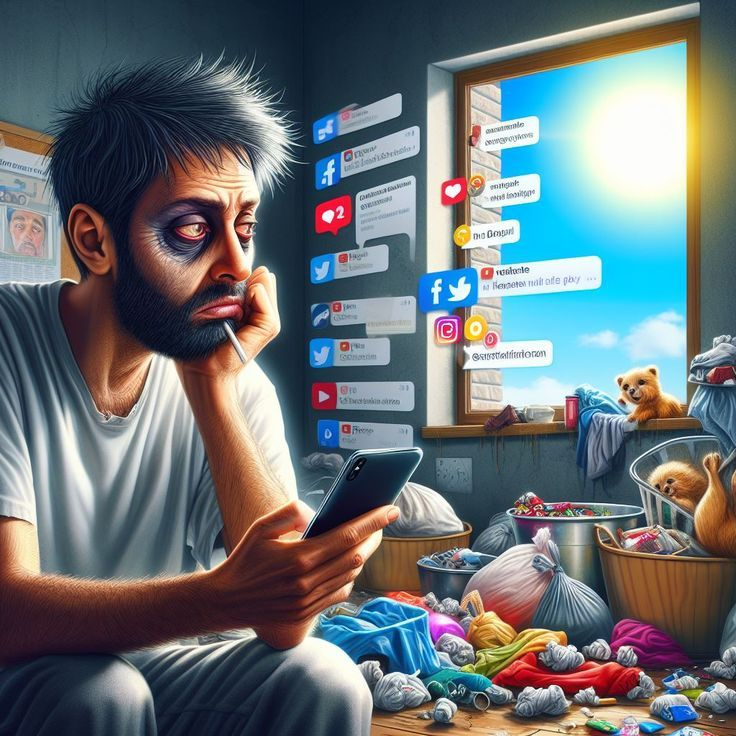
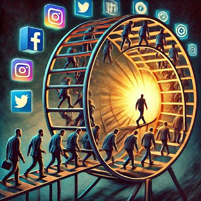
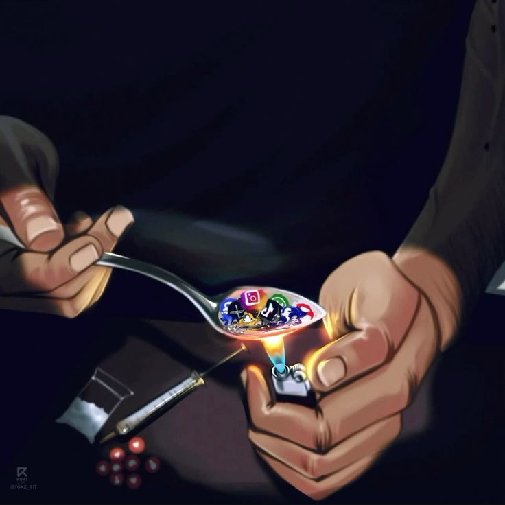
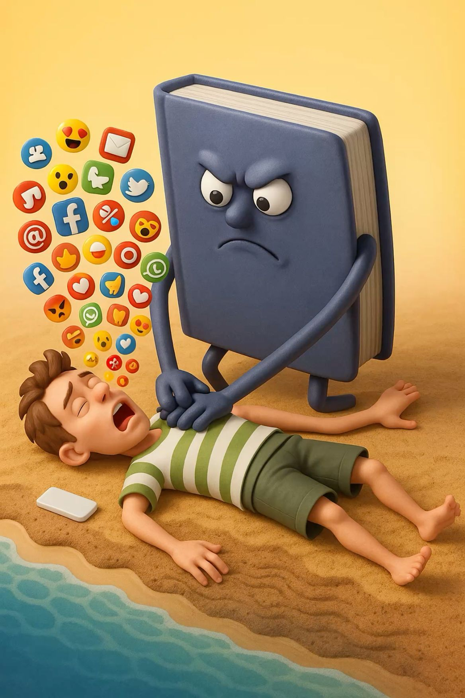
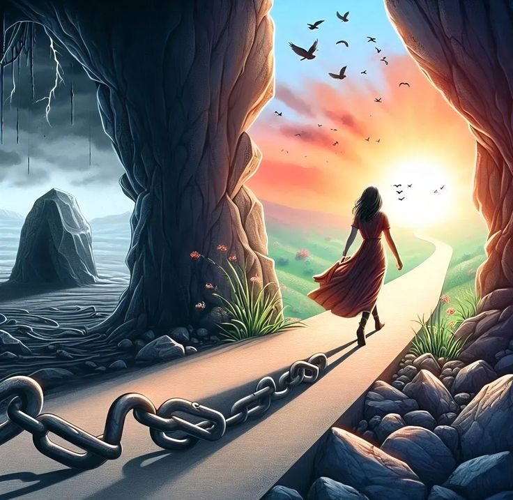
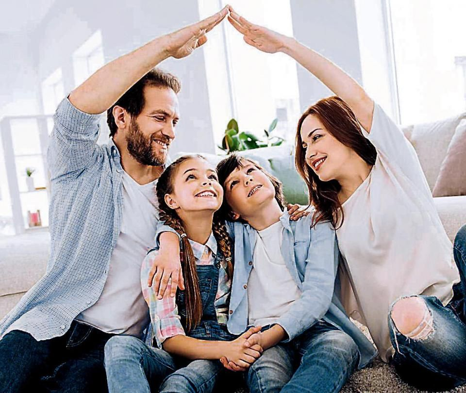
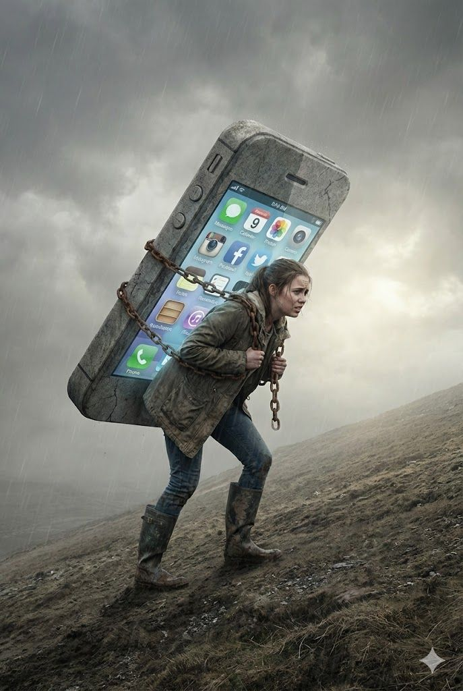
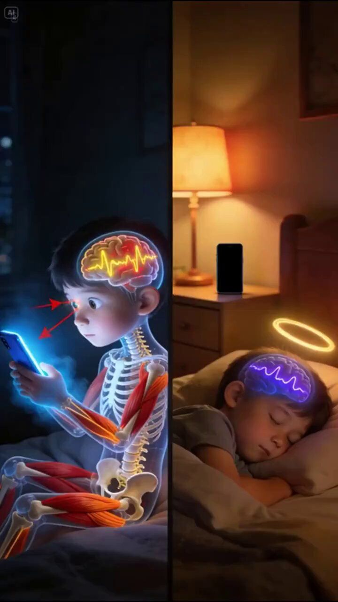
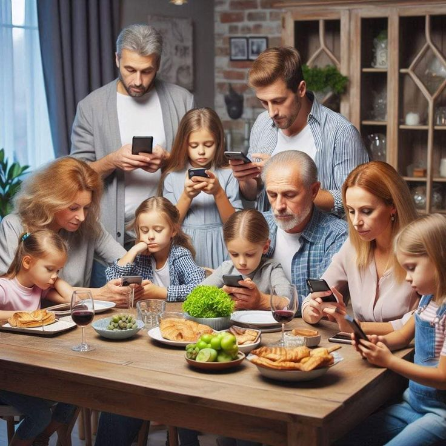
رؤيتناOur Vision
حماية النسيج الاجتماعي المصري من مخاطر التفكك الإلكتروني وتوعية الأسرة لاستعادة الاستقرار. Protecting the Egyptian social fabric from digital disintegration and raising family awareness.
الأرقام تتحدثNumbers Talk
حالة طلاق سنوي (2023)
Divorce Cases (2023)
مليون هاتف محمول بمصر
Million Mobile Phones
المؤسسات الدينيةReligious Institutions
الأزهر الشريفAl-Azhar Al-Sharif
٢٥٥ حالة طلاق يومياً مرتبطة بالسوشيال ميديا.
255 divorce cases daily linked to social media.
الكنيسة المصريةThe Coptic Church
٦٠٪ من المشاكل الأسرية مرتبطة بالسوشيال ميديا و٥٠ ألف أسرة تعاني سنوياً.
60% of family issues are linked to social media; 50k families suffer annually.
دار الإفتاءDar Al-Ifta
١٠٠ ألف فتوى سنوياً لمشاكل أسرية، ٣٠٪ منها بسبب التواصل الاجتماعي.
100k annual fatwas for family issues, 30% due to social media.
النزيف الاقتصاديEconomic Loss
مليار جنيه خسارة إنتاجية سنوياً
Billion EGP Production Loss
مليار تكلفة علاج اضطرابات نفسية
Billion Therapy Costs